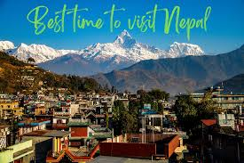
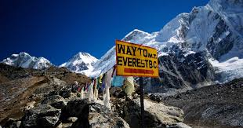

Best Time to Visit
The best seasons are autumn (Sept–Nov) with clear skies and great trekking, and spring (Mar–May) when rhododendrons bloom. Winter is cold in the mountains but fine for city tours, while monsoon (Jun–Aug) brings rain and landslides.
Getting Around
Nepal has no trains or Shinkansen—travel is mainly by road and air. Tourist buses connect Kathmandu, Pokhara, and Chitwan, while domestic flights are fastest for trekking hubs. Local buses are cheap but crowded, and taxis or ride apps (Pathao, Indrive) are handy in cities.
Cultural Etiquette
Greet with “Namaste” (palms together), remove shoes before entering homes or temples, and dress modestly. Walk clockwise around stupas, avoid stepping over people’s legs, and ask before taking photos.